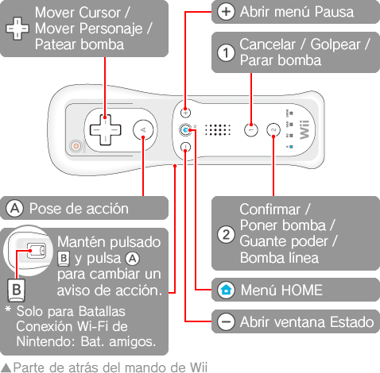

7 |
Controles |
 |
|
Aquí te explicamos los controles básicos.
Las instrucciones sobre cómo usar cada botón aparecen en las distintas pantallas de menú, así que consúltalas.
Sujeta el mando de Wii de lado.

Este juego no es compatible con la función de vibración del mando de Nintendo GameCube.
|
||||||||||||||||||||||||||||||||||||||||||||||||||||||||||||||||||||||||||||||||||||
 |
 |
 |